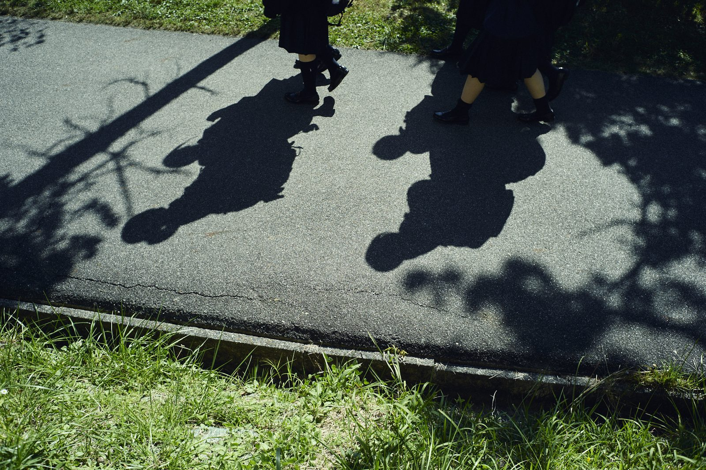

読むだけでは、三育はわからない。
INVITATION ｜ 入学案内全寮制×全人教育にしか、できないことがある。ひとつでも気になったら、一度キャンパスへ来てみてください。

学力よりも、「本人の意思」を大切にする選抜。
本人の意思を尊重
寮生活への教育理念である全人教育にならい、学力試験の結果よりも本人の意思を最大限尊重します。
面接は本人と保護者
面接は本人・保護者。高校の一般Ⅰ期は、日曜夕方に来校して寮に一泊し、月曜午前に試験を行います。
受験前に一度、来校を
全寮制・キリスト教主義など特色が強いため、受験前に一度、見学や体験への来校をおすすめしています。
中学校
| 区分 | 概要 | 選考 |
|---|---|---|
| 一般Ⅰ〜Ⅲ期 | 1〜2月。Ⅰ期は本校のほか東京・地方会場でも受験可 | 小学校の学習評価、面接、国語・算数・作文 |
| AO入試 | 本校第1志望で、三育小在籍者または寮宿泊体験の参加者 | エントリー審査あり |
高等学校
| 区分 | 概要 | 選考 |
|---|---|---|
| 一般Ⅰ期 | 専願。寮に一泊する2日間 | 調査書、面接、国語・英語（リスニング含む）・数学・作文 |
| 一般Ⅱ期 | 併願可 | 同上 |
日程・募集要項は毎年変わります。最新の募集要項はこちら（PDF）からご確認ください。
高1の3人に2人が、このキャンパスでの寮生活を高校からスタートします。
広島三育学院中学校からの進学者に加え、系列の沖縄三育中学校、系列外の中学校から生徒が集まり、高1から一緒に寮生活を始めます。高校から入学しても、輪の外になることはありません。
2026年度 高校入学生（35名）の出身中学校
費用と、学びを支える制度
| 項目（月額） | 中学校 | 高等学校 |
|---|---|---|
| 授業料 | ¥34,000 | ¥38,000 |
| 実験実習費・施設設備費 | ¥8,500 | ¥10,000 |
| 寮教育費 | ¥24,500 | ¥24,500 |
| 食費 | ¥33,000 | ¥33,000 |
| その他諸経費（学習費・積立金など） | ¥10,000〜 | ¥10,000〜 |
金額はすべて月額です。
恩おくり奨学金 ── 受けた恩を、次の誰かへ。
ソアンの理念に共感した本校卒業生が基金を立ち上げ、設立した奨学金制度です。在学中に規定のボランティアプログラムを修了することで、奨学金を受けられる仕組み。家計の状況や特別な才能ではなく、地域のために動こうとする意欲を応援し、将来、社会に貢献できる人材を育てる教育支援型の奨学金です。
就学支援金・県の授業料軽減
高校の授業料が対象。国の支援金は所得制限なし。
広島三育学院奨学金
授業料を上限に毎月支給。無利子貸与。
入学金の優待割引
兄弟姉妹・系列校・卒業生子女など。
AO入試奨学金・兄弟特別支援
中学AO入試受験者、兄弟3名以上の在学など。
各制度の金額・条件・申請方法は、学費支援のご案内をご覧ください。
入学前の、いちばんの不安に。
寮生活について
24時間一緒で、友達とうまくやっていけますか？
入学1ヶ月のアンケートでは、「2〜3週間で打ち解けた」という声が多くありました。寮の部屋や行事が、仲間との距離を縮めます。
体調を崩したときは、どうなりますか？
寮の自室で休養できます。寮母や養護教諭が様子を見ながらサポートし、通院が必要なときも付き添います。
ホームシックが心配です。
慣れるまでの時間には個人差がありますが、寮監や先生、友達や先輩のサポートを受けながら、少しずつ乗り越えていきます。
自分のことを、自分でできるか不安です。
保護者アンケートでは、7割が「身の回りのことを自分でするようになった」と回答しています。先輩が教えてくれるので、少しずつできるようになります。
朝、起きられるか心配です。
起床は6時。最初は「ねむい」という声も多いですが、生活のリズムが整っていきます。
先輩保護者が「入学前に知っておきたかった」こと
キリスト教を知らなくても入学できますか？
はい。キリスト教を知らなかったご家庭からも入学しています。詳しくはキリスト教を知らないご家庭へをご覧ください。
家族とはどうやって連絡をとりますか？
各寮に外線電話と寮携帯があり、連絡できます。寮や学校での様子は、寮監や担任がつくる保護者との連絡グループで、写真付きで共有しています。
スマホは使えますか？
中学は持込不可です。高校は許可制で、消灯前の25分間に利用できます。
服装や持ち物のルールは？
入寮前に一覧でご案内します。生活用品の配送も可能です。
高校からでも入学できますか？
はい。高1の3人に2人が、高校から本校での寮生活をスタートしています。転入のご相談も随時受け付けています。
山に囲まれた、暮らしの場所。
都市部から車で1時間以上。約5万坪の自然に囲まれた、静かなキャンパスです。

| 広島空港から | 車で25分 |
|---|---|
| JR三原駅から | JR山陽本線「河内駅」まで20分、河内駅から車で20分 |
| JR広島駅から | JR山陽本線「河内駅」まで55分、河内駅から車で20分 |
| お車で | 山陽自動車道「河内IC」から30分、「三原久井IC」から30分 |
〒729-1493 広島県三原市大和町下徳良296-2
まずは、話を聞くだけでも。
見学・寮宿泊体験のお申込み、入学・転入のご相談は、お電話・LINE・フォームから受け付けています。